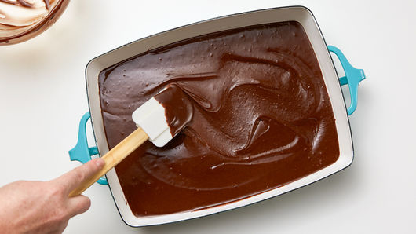
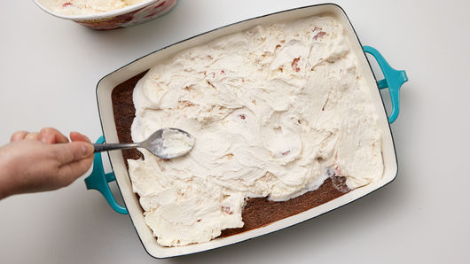
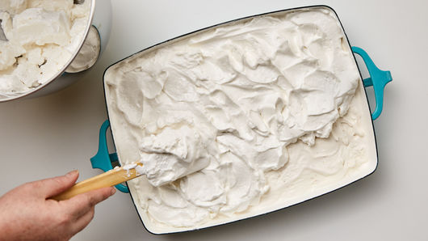
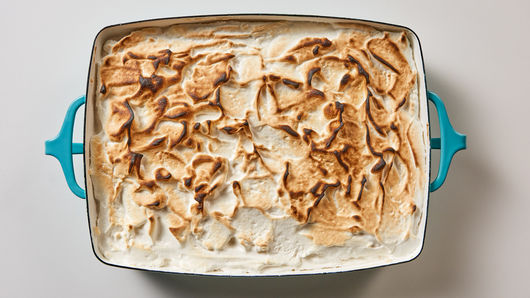

| Amount | Product |
|---|---|
| 1 box | Betty Crocker Supreme original brownie mix |
| 6 cups | strawberry ice cream, softened |
| 6 | egg whites, room temperature |
| 3/4 cup | sugar |
| 1/2 teaspoon | cream of tartar |
| 1 teaspoon | vanilla |
Heat oven to 350°F. Spray bottom of 13x9-inch pan with cooking spray. Make brownie batter as directed on box for cakelike brownies. Spread in pan.
Bake 26 to 28 minutes or until toothpick inserted 2 inches from side of pan comes out almost clean. Cool 1 hour.
Evenly spread softened strawberry ice cream on top of cooled brownie. Place in freezer while making meringue.<\p> 
In medium glass or metal bowl, stir egg whites, sugar, cream of tartar and vanilla with whisk until blended. Set over pan of simmering water, stirring occasionally with whisk, 16 to 20 minutes or until sugar has dissolved and egg mixture reaches 160°F. Pour into large bowl; beat with electric mixer on high speed 8 to 10 minutes or until stiff glossy peaks form. Use small icing spatula to swirl meringue over top of ice cream layer. Freeze at least 3 hours or overnight.
Heat oven to 500°F. Bake 3 to 5 minutes or until meringue peaks start to turn golden brown. Cut into 5 rows by 3 rows. Store covered in freezer.